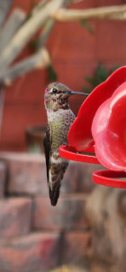
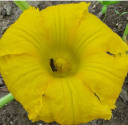

What are Pollinators?

Pollinators are creatures that visit flowers to feed on nectar. During feeding they carry pollen from one flower to another which greatly helps the plant
They can be anything from insects such as bees to animals such as hummingbirds. They are incredibly helpful to gardens since they help
them thrive and help increase fruit yields in many cases.
Attract Pollinators to Your Garden!!!

Pollinators will be most attracted to your garden if you have a source of food for them. As such a lot of flowers and flowering plants
will help attract them. This applies to most pollinators but helps out a lot with bees and butterflies. Hummingbirds will be attracted to flowers
of course but a well placed feeder will help keep them coming to your garden to visit not only the feeder but the other plants in your garden.
Once they see your garden as a source of food they will consistnetly visit.